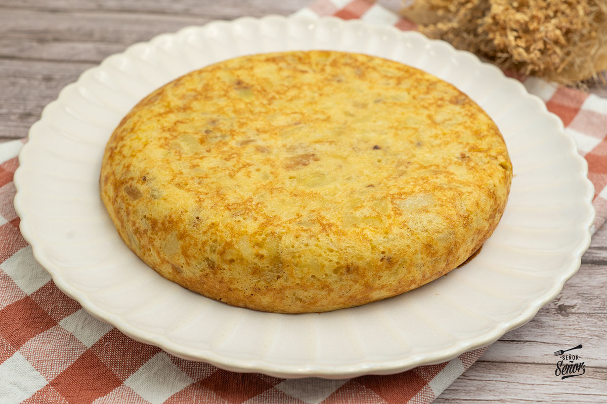

Tortilla de Patatas
Ingredientes
- 4 patatas medianas
- 6 huevos
- 1 cebolla (opcional)
- Aceite de oliva virgen extra
- Sal al gusto

Elaboración paso a paso
- Pelar y cortar las patatas y la cebolla en láminas finas.
- Freír las patatas y la cebolla en abundante aceite de oliva a fuego medio hasta que estén blandas.
- Batir los huevos en un bol grande y añadir un poco de sal.
- Escurrir el aceite de las patatas y mezclarlas con los huevos batidos. Dejar reposar 5 minutos.
- Cuajar la mezcla en una sartén por ambos lados hasta que esté dorada al gusto.
Descargar receta en PDF
← Volver al menú principal